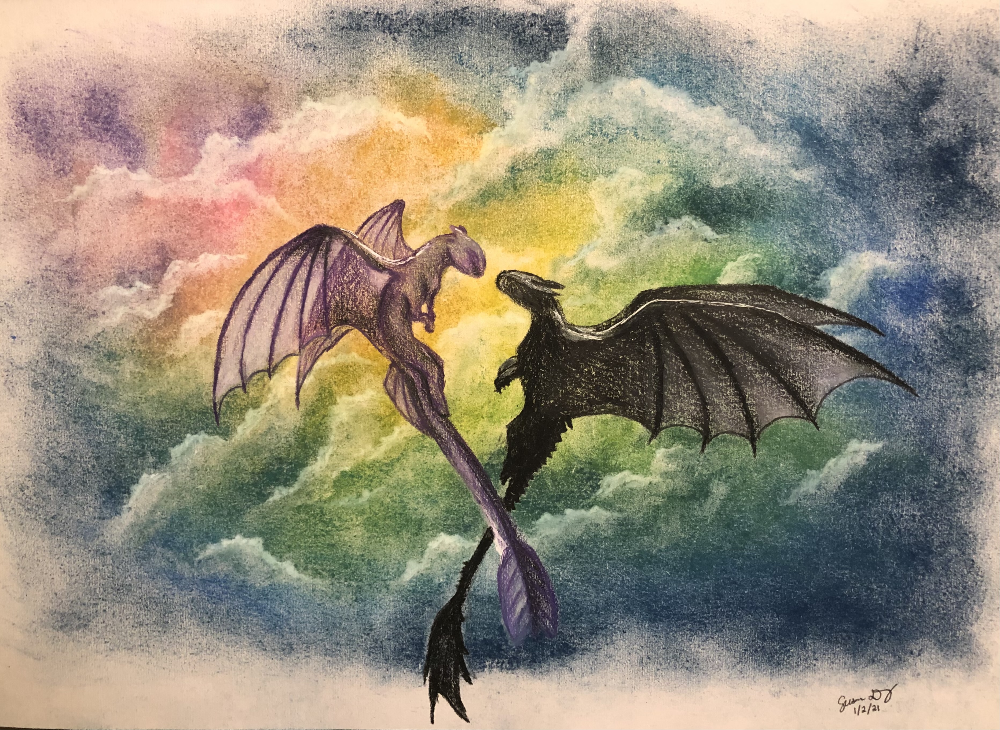

Birds in Flight
36"x48" on Canvas
$200
Leaves from the Vine
18"x24" on Canvas
$85
Oogway Ascends Inspired
18"x24" on Canvas
$85
Fantasy
9"x12" on Canvas
$50
Pencil 1
9"x12" on Paper
$40

Colored Pencil + Pastel
9"x12" on Paper
$40
Colored Pencil 1
9"x12" on Paper
$40
Colored Pencil Leopard
9"x12" on Paper
$40